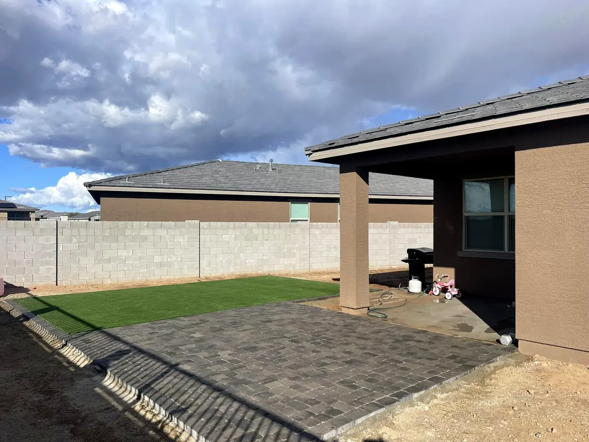
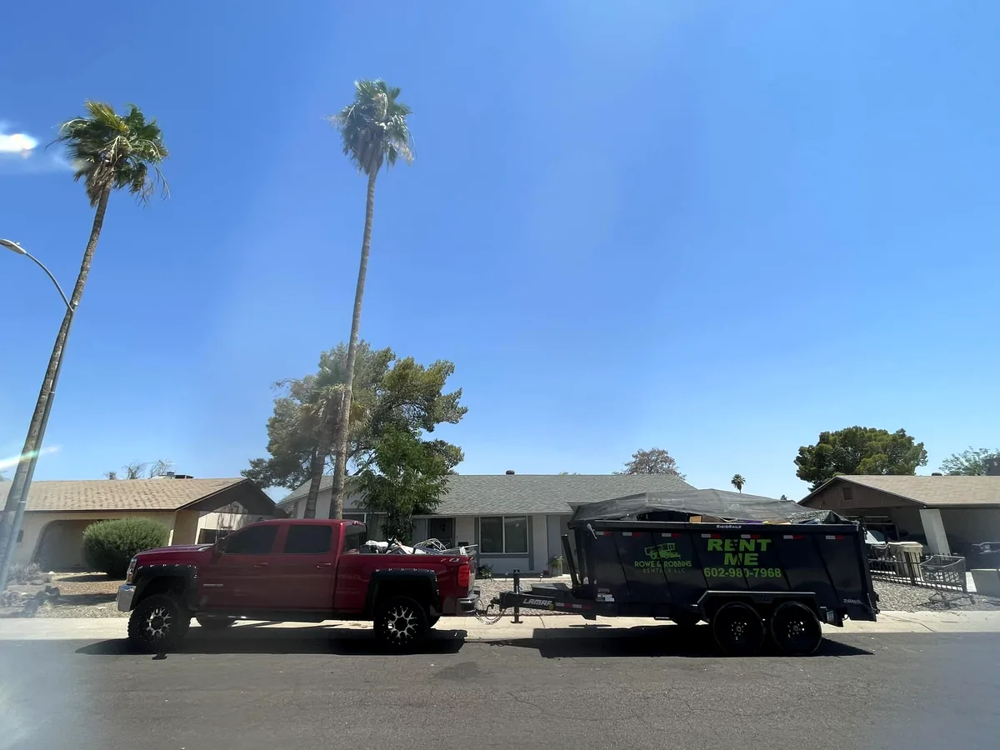
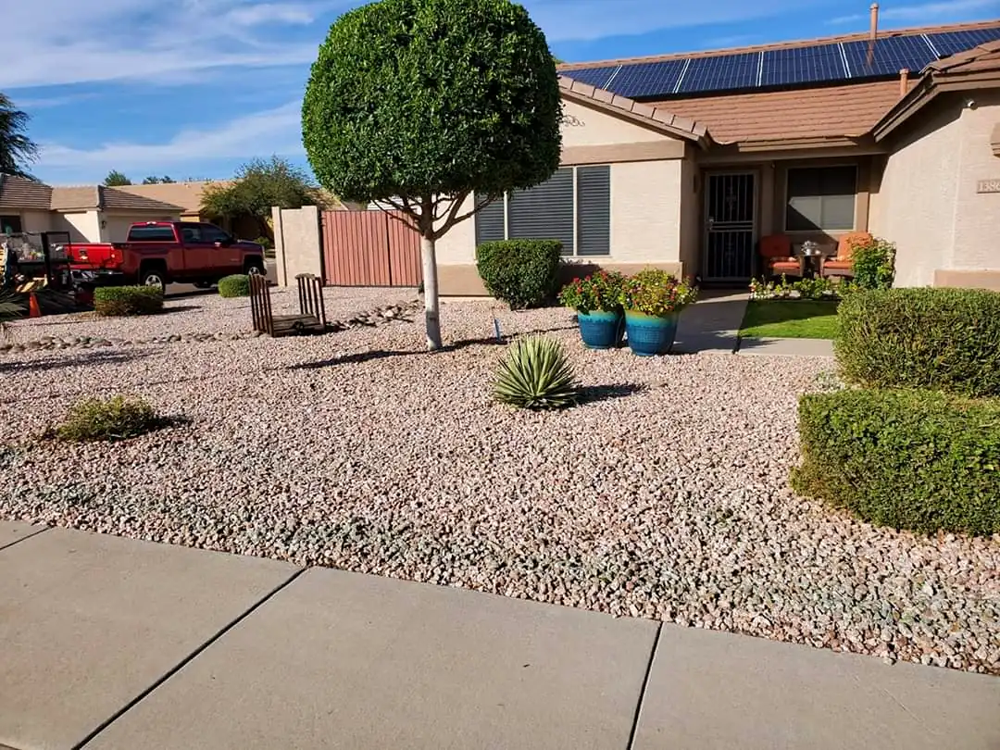
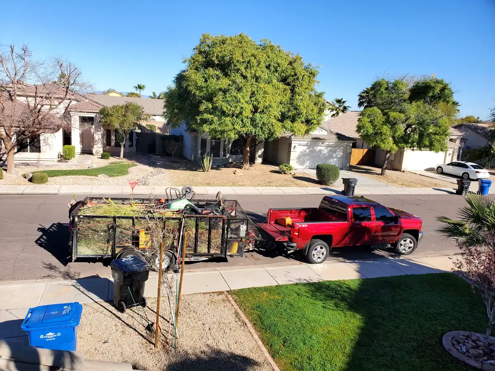
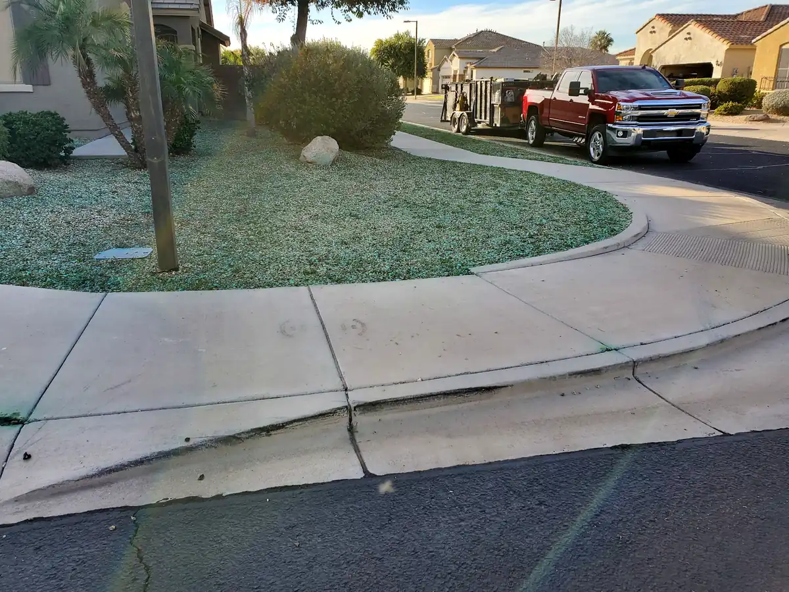

Ready when you are.
Call Tim's Landscaping or send the estimate form — the on-site estimate is free.
Services — Surprise, AZ
Every service starts the same way: a free on-site estimate and an honest conversation about your yard and your budget.

Whole-yard landscaping with a desert-smart finish: plantings, decorative rock and gravel, turf areas, and paver patios like the ones in our project photos. Whether it is a front-yard refresh or a backyard built for evenings outside, the crew designs around how you actually use the space — and around your budget.
Palms grow fast in the West Valley, and dead fronds and seed pods get heavy. Tim's Landscaping trims and shapes palms cleanly, removes fronds and pods, and leaves the yard tidy — no debris left in the pool or the planters.


Shaped, healthy trees frame the whole property. The crew trims and shapes shade trees and ornamentals, thins heavy canopies, and handles the tree work a desert yard needs — then hauls everything away.
Life gets busy and yards get ahead of all of us. A one-time cleanup from Tim's Landscaping cuts back the overgrowth, clears the debris, and resets the whole property — the transformation customers say makes everything look better.


The yards that always look good are the ones on a schedule. Recurring lawn and yard maintenance keeps grass cut and edged, shrubs trimmed, and beds tidy — so your home looks cared for every week, not just the week after a cleanup.